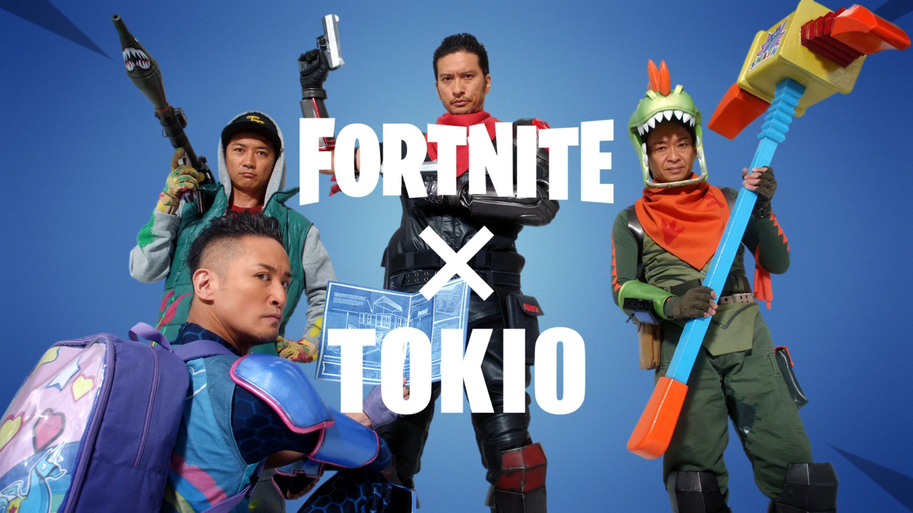
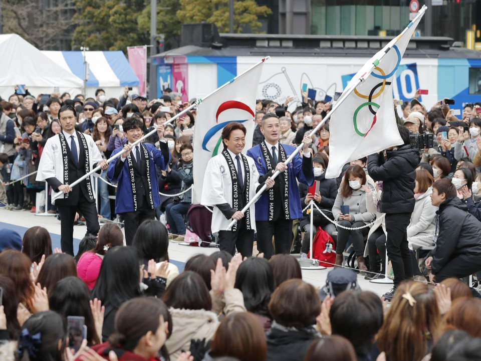

Name: Yixin Hu
Hometown: Wuhan, China
Favorite city: London, UK
Instagram: @ixiwho
Hi, I'm an international student from China.
The pronunciation of my name is "E-Shin(First Name) Who(Last Name)".
I come from a city in central China called Wuhan.
I watched a lot of movies and TV series from many regions around the world includes Greater China, Japan, South Korea, Europe, the United States, and Thailand.
I don't have specifically preferred language and genre for music.
Here are some of my favorite artists:
Perfume is a High-tech Electronic Girl Group from Japan. Their technical team will also be employed in the Tokyo Olympics performance team.
C-pop singer from Taiwan, debuted in 1999.
Besides professional singers, I'm a fan of the idols of Johnny & Associates. In Asia, the idol is a profession that is independent of the singer and the actor. An idol can do the job of singer, actor, TV host, acrobatic performer and comedy artist.
Here are some of my favorite idols:
Tokio is a Japanese rock/pop band formed by Johnny & Associates that debuted in 1994. The current members are Shigeru Joshima, Taichi Kokubun, Masahiro Matsuoka, and Tomoya Nagase.
TOKIO x Fortnite campaign
TOKIO is also the official ambassador of Tokyo 2020 Olympic & Paralympic!!!
Arashi is a Japanese boy band formed by Johnny & Associates that debuted in 1999. The members are Ohno Satoshi, Sakurai Sho, Aiba Masaki, Ninomiya Kazunari, and Matsumoto Jun. Arashi the best-selling boyband in Japan.
TOKIO and Arashi's new year campaign